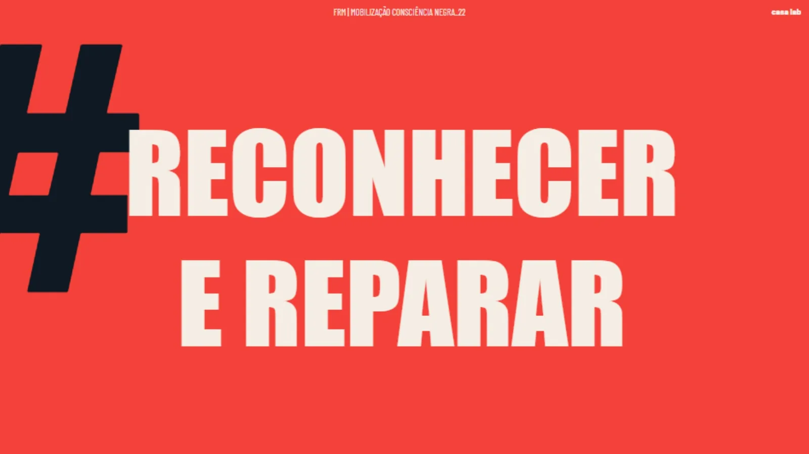
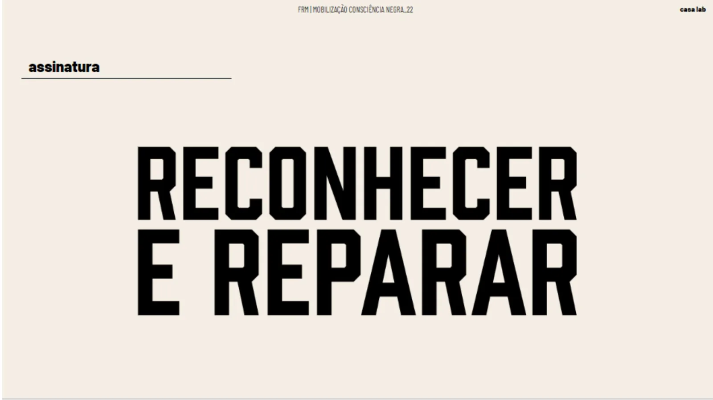
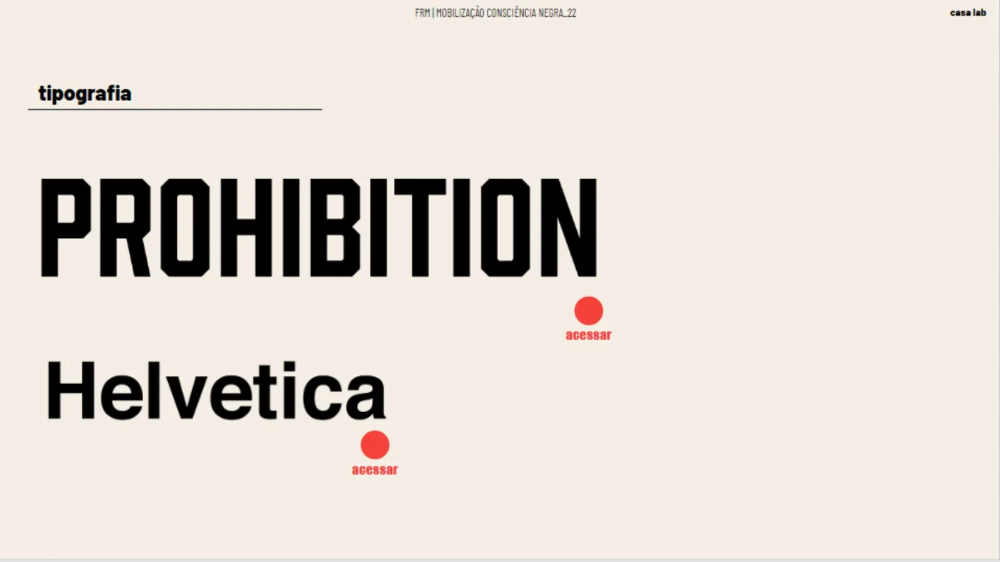
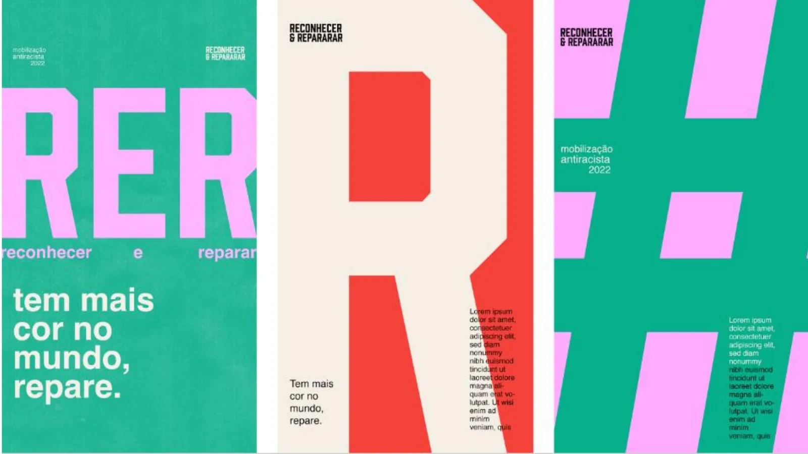
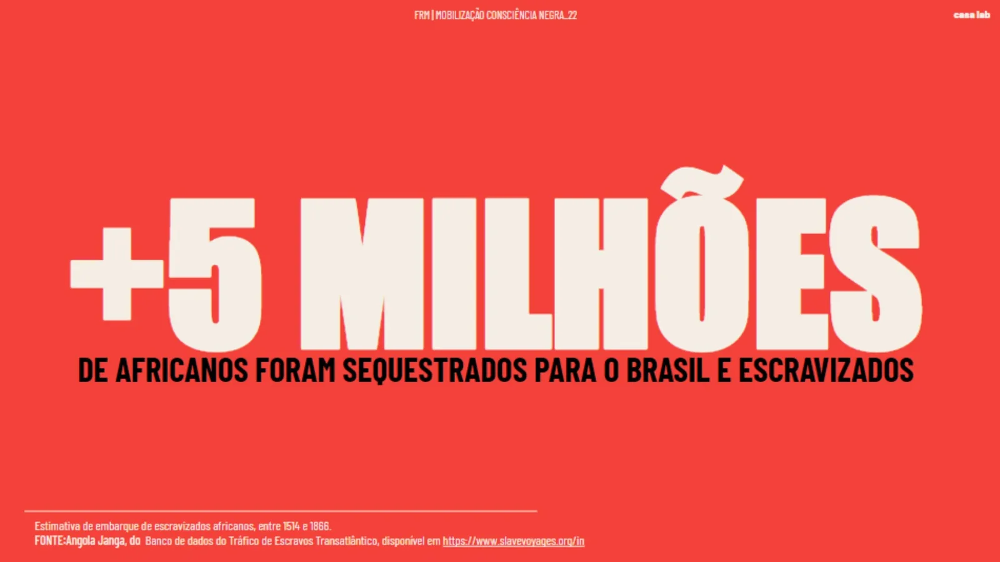
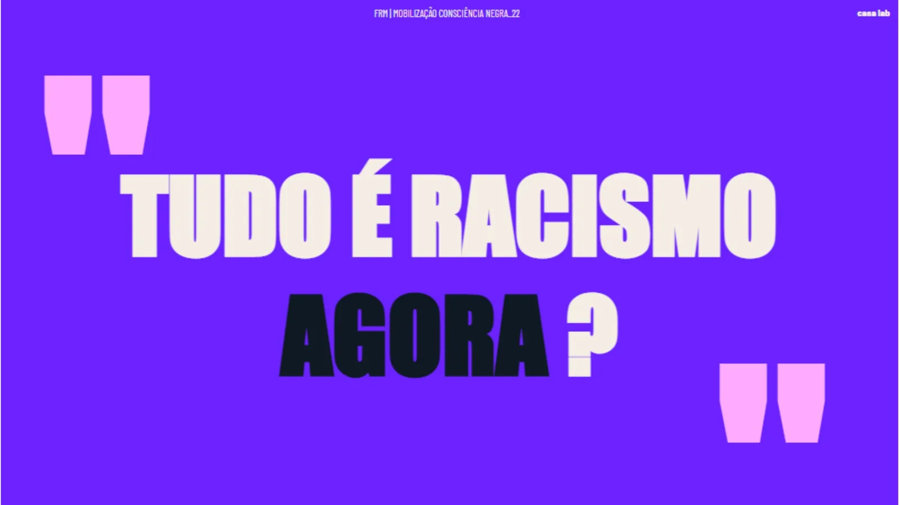
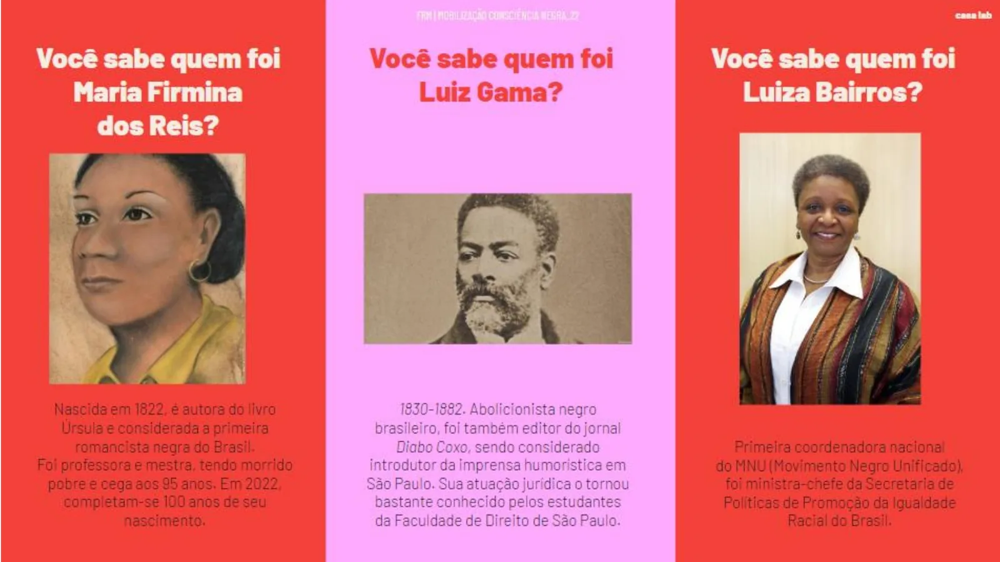
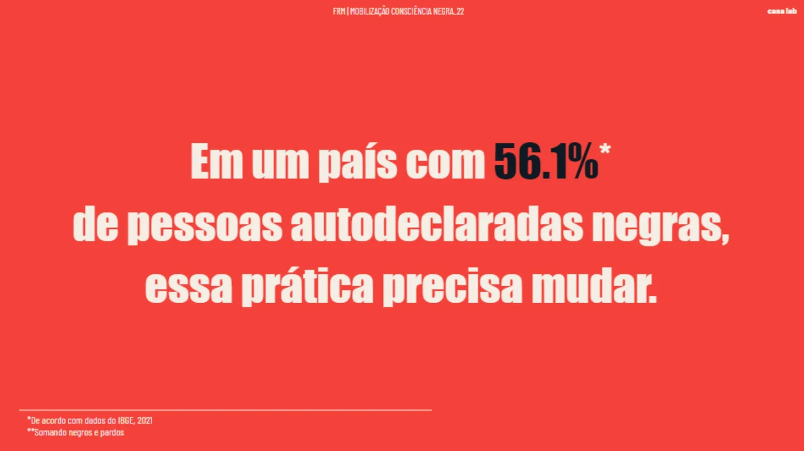
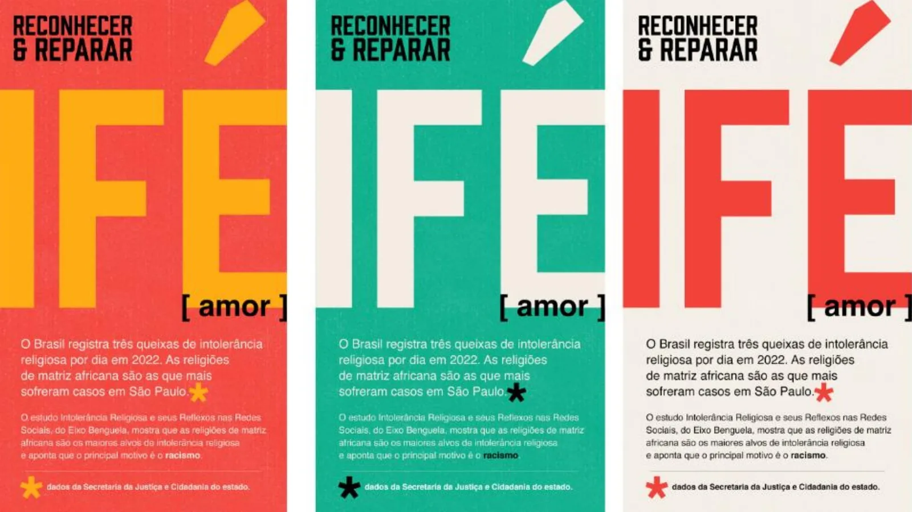
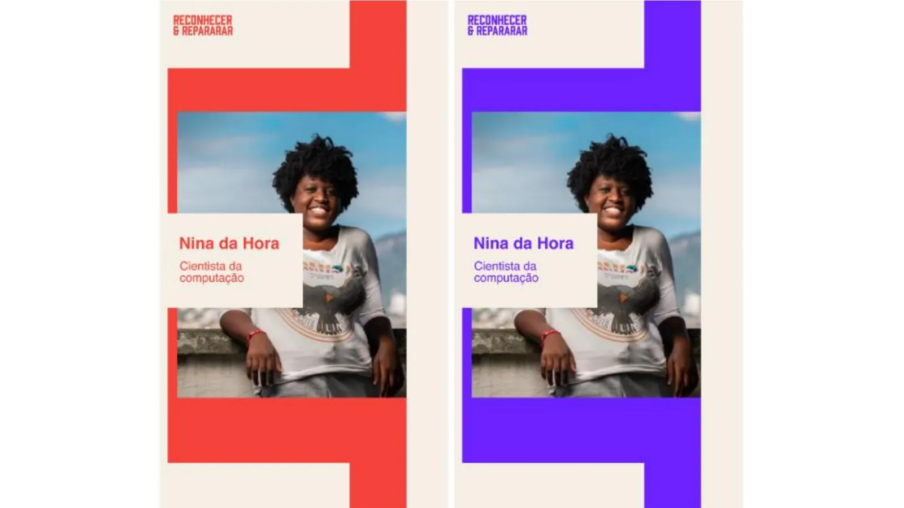

Comunicação institucional · 2022
Reconhecer e Reparar
Campanha de mobilização sobre racismo estrutural em que o dado e a fonte são o próprio elemento gráfico.
- Cliente
- Fundação Roberto Marinho
- Ano
- 2022
- Área
- Comunicação institucional
- Tipo
- Profissional
Contexto
Campanha de mobilização sobre racismo estrutural no Brasil, construída em cima de dados e de citações de pesquisadoras e pesquisadores negros. Cada peça carrega uma informação e a fonte dela.
Conceito
O conteúdo é o elemento gráfico. Tipografia condensada em caixa alta ocupa a peça inteira e a cor de fundo muda a cada afirmação, o que dá ritmo à série quando as peças aparecem em sequência.
Sistema visual
- Prohibition para os títulos e Helvetica para o texto corrido.
- Assinatura “Reconhecer e Reparar” com o jogo entre a cerquilha e as duas palavras.
- Fundos chapados em vermelho, roxo, verde e rosa, um por peça.
- Dado grifado em cor contrastante dentro da frase, com a fonte sempre no rodapé, separada por um fio.
- Peças de retrato com ilustração e biografia curta de Maria Firmina dos Reis, Luiz Gama e Luiza Bairros.









Aplicações
Série de cards de dado, citação, conceito e retrato, cartazes da linha IFÉ, peças de stories com convidadas e assinatura animada em quatro cores.